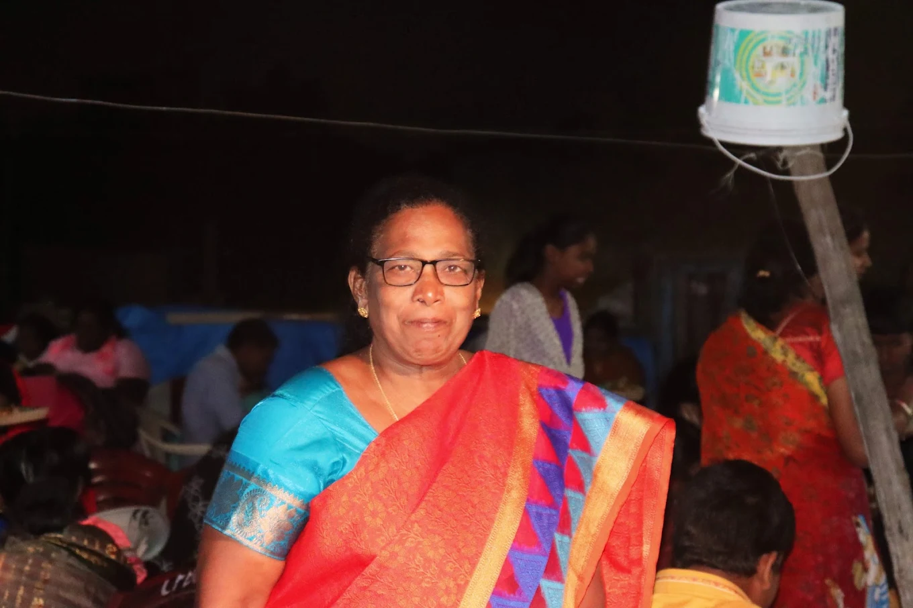
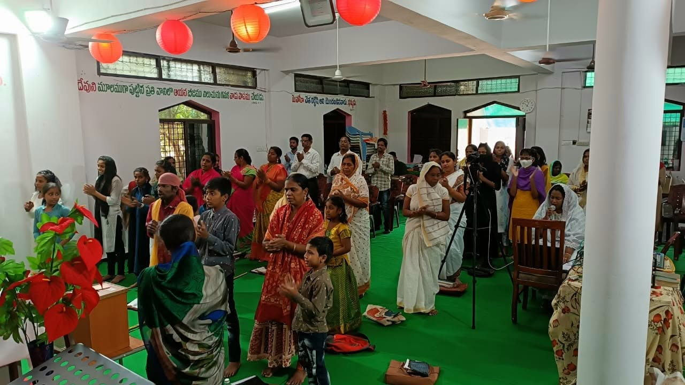
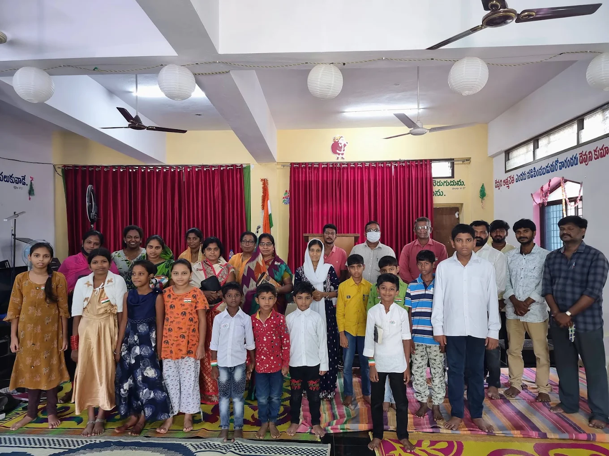
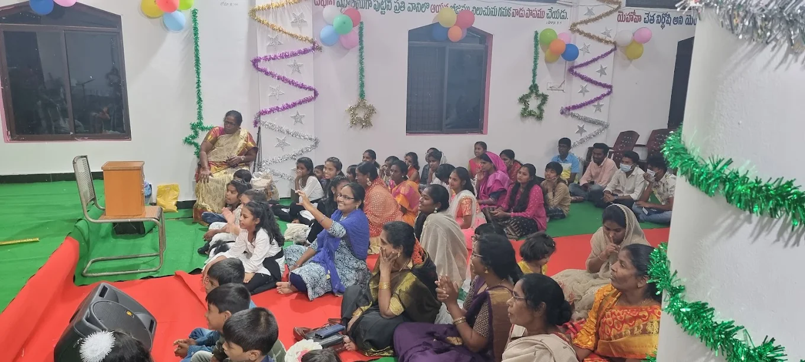
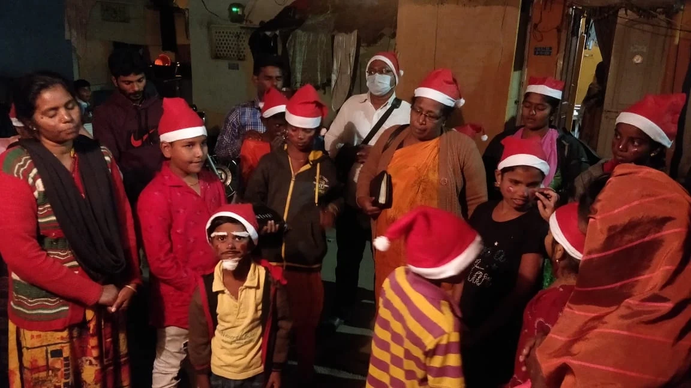

Faith
Growing in faith through God's Word, prayer, worship, and fellowship.
Serving God, sharing His Word, and reaching lives with the love of Jesus Christ.
Discover Our StoryJeeva Nadi Ministries exists to proclaim the Gospel of Jesus Christ, encourage believers in their faith, and bring hope to people through the Word of God.
Jeeva Nadi Ministries is dedicated to spreading the message of God's love and helping people grow in faith through the Word of God.
Through worship, prayer, Bible teaching, fellowship, outreach, and service, the ministry seeks to touch lives and glorify Jesus Christ.
Our desire is to help people discover hope, purpose, and new life through Jesus Christ.

Growing in faith through God's Word, prayer, worship, and fellowship.
Demonstrating the love of Christ through compassion, kindness, and service.
Sharing the hope, peace, and new life found through Jesus Christ.
Serving God and people with humility, dedication, and love.
A life dedicated to prayer, preaching, service, and the work of God.

Trust in the LORD with all your heart and lean not on your own understanding.
— Proverbs 3:5Pastor Christina Malligary is a devoted servant of God who has dedicated her life to prayer, preaching, and serving the Lord.
Her ministry is centered on seeking God's guidance, faithfully proclaiming His Word, praying for people, and encouraging believers to grow in their relationship with Jesus Christ.
Through a life of continuous prayer, preaching, worship, and service, she seeks to remain faithful to the calling God has placed upon her life.
A life devoted to prayer and intercession for people and the ministry.
Faithfully sharing the Word of God and encouraging believers in their faith.
Caring for people and demonstrating Christ's love through service.
Giving her life to God's calling and faithfully serving His purpose.
Her desire is simple: to serve God faithfully, proclaim His Word, remain devoted to prayer, and help people come closer to Jesus Christ.
A glimpse of the ministry, fellowship, and outreach activities of Jeeva Nadi Ministries.




Watch moments from our ministry, worship, service, and Scripture memory videos.
A special time of thanksgiving, fellowship, and serving people with the love of Christ.
Learning and remembering God's commandments through Scripture and teaching.
Encouraging children and believers to learn, remember, and live by God's Word.
A Scripture-based message reminding us to put on the full armor of God.
Remembering the triumphal entry of Jesus Christ and reflecting on His journey of love and salvation.